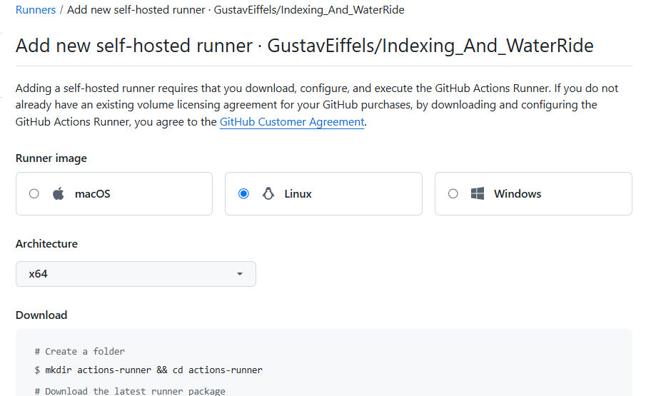
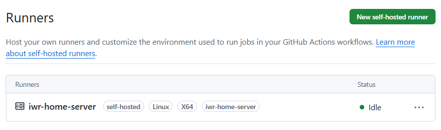
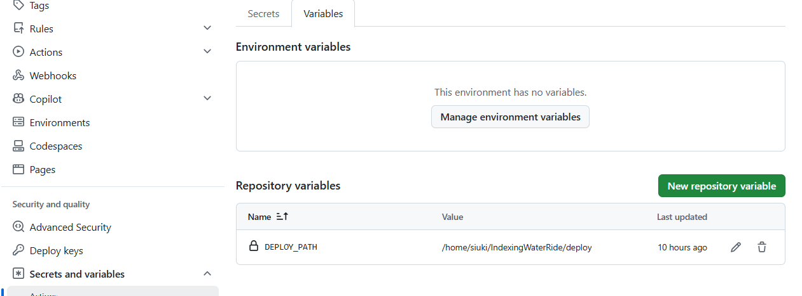

IndexingWaterRide 배포 자동화 — 포트포워딩이 막힌 홈서버에 outbound polling 방식으로 CI/CD를 구축한 기록
IndexingWaterRide는 텔레그램 polling 방식으로 사용자 메시지를 감지하고 응답한다. 즉 외부에서 서버로 들어오는(inbound) 연결이 필요 없는 구조다.
서버는 집에 있는 개인 서버이며, 보안 취약성 우려로 포트포워딩을 열지 않았다. 그 결과 외부에서 인바운드로 서버에 접근할 수 없는 상태다.
기존 배포 방식의 문제
배포할 때마다 집 서버에 SSH로 직접 접속해서 빌드 파일을 내렸다 올렸다 하는 수동 작업을 반복했다. 사람이 매번 개입해야 하고, 절차가 사람마다/순간마다 달라질 수 있다는 점이 문제였다.
레포지토리에 .github/workflows/*.yml 형태로 워크플로우를 정의해두면,
push·PR 같은 이벤트가 발생할 때 GitHub가 그 워크플로우를 자동으로 실행해주는 CI/CD 도구다.
워크플로우는 하나 이상의 job으로 구성되고, 각 job은 다시 순차적으로 실행되는 step들로 구성된다.
각 job은 runs-on에 지정한 실행 환경에서 돈다.
클라우드 러너 vs Self-hosted 러너
| 구분 | 클라우드 러너 | Self-hosted 러너 |
|---|---|---|
| 실행 위치 | GitHub가 제공하는 임시 VM | 직접 등록한 머신(여기서는 홈서버) |
| 네트워크 방향 | GitHub → 클라우드 VM 생성 | 러너 → GitHub로 outbound polling |
| 인바운드 서버 적합성 | 부적합 (직접 접속 불가) | 적합 (서버가 먼저 연결을 검) |
인바운드가 막힌 홈서버에 배포하려면 서버 쪽에서 먼저 GitHub로 연결을 거는 self-hosted runner가 필요한 이유가 여기에 있다.
홈서버에 GitHub Actions Runner를 설치하고 레포지토리에 등록했다.
레이블은 self-hosted, Linux, X64, iwr-home-server로 지정.
레이블을 프로젝트 전용(iwr-home-server)으로 둔 이유는, 같은 서버에 다른 프로젝트 runner가 떠 있어도 job이 섞이지 않게 하기 위함이다.

Self-hosted Runner 등록 화면

등록된 Runner 상태 — iwr-home-server Idle
Repository Variable 설정
DEPLOY_PATH 변수로 배포 경로(/home/siuki/IndexingWaterRide/deploy)를 분리 관리한다.
yml 파일에 경로를 하드코딩하지 않아, 나중에 경로가 바뀌어도 변수만 수정하면 된다.
| Name | Value |
|---|---|
DEPLOY_PATH | /home/siuki/IndexingWaterRide/deploy |

Repository Variable 설정 화면
deploy.yml 워크플로우
트리거는 main 브랜치 push. concurrency 그룹으로 묶어서 배포가 동시에 겹치지 않게 막는다.
name: Deploy
on:
push:
branches: [main]
concurrency:
group: deploy-main
cancel-in-progress: false
jobs:
deploy:
runs-on: [self-hosted, iwr-home-server]
steps:
- name: Checkout
uses: actions/checkout@v4
- name: Set up JDK 17
uses: actions/setup-java@v4
with:
java-version: '17'
distribution: 'temurin' - name: Grant execute permission for gradlew
working-directory: server
run: chmod +x gradlew
- name: Run tests
working-directory: server
run: ./gradlew test
- name: Build jar
working-directory: server
run: ./gradlew bootJar
- name: Copy jar into deploy directory
working-directory: server
run: |
JAR=$(ls build/libs/*.jar | grep -v plain | head -n1)
cp "$JAR" "${{ vars.DEPLOY_PATH }}/server.jar"
- name: Restart server container
working-directory: ${{ vars.DEPLOY_PATH }}
run: docker compose up -d --force-recreate server전체 동작 흐름
main 브랜치에 push
→ GitHub Actions가 deploy.yml 트리거 감지
→ runs-on: [self-hosted, iwr-home-server] 와 일치하는 runner 탐색
→ 홈서버에서 polling 중이던 runner가 job 수신
→ 홈서버 위에서 직접 실행:
checkout → JDK 17 세팅 → gradlew test
→ bootJar 빌드 → jar를 DEPLOY_PATH로 복사
→ docker compose up -d --force-recreate server| 구분 | 이전 | 이후 |
|---|---|---|
| 배포 트리거 | 사람이 직접 SSH 접속 | main 브랜치 push |
| 테스트 실행 | 수동 또는 생략 | 배포 전 자동으로 gradlew test |
| 빌드/배포 | 로컬에서 빌드 후 수동 전송 | 홈서버에서 자동 빌드 + 컨테이너 재기동 |
| 외부 접근 요건 | SSH 인바운드 필요(또는 포트포워딩) | 불필요 (runner가 outbound polling) |